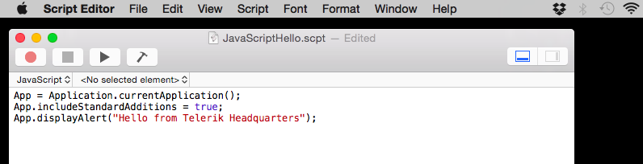

Hello World in Javascript
Here is the Hello World program for Javascript on my MacBook kindly provided by Telerik Development This is hosted by the Script Editor and has a mere three lines. Presumably Javascript can provide most of the functionality of Java without the over head of the Java VM ...

Open the Script Editor from LaunchPad and set the script language to Javascript then type the code above and press the run button.
JavaScript for OS X Automation by Example
Tags - Apple MacBook Pro (13 inch, Mid 2010), OS X Yosemite Version 10.10.1, Script Editor, Javascript, Hello World, Telerik Development,